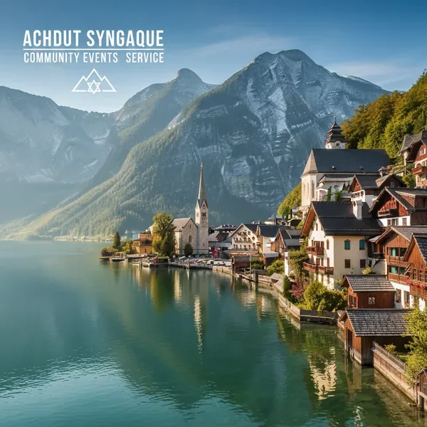

יעדים מרכזיים בנסיעה לאוסטריה

וינה - בירת התרבות
נבקר בבירת אוסטריה המפוארת, נסייר בארמון שנברון, נטייל ברחובות ההיסטוריים ונבקר בבית הכנסת המרכזי ובמוזיאון היהודי.

זלצבורג - עיר המוזיקה
עיר הולדתו של מוצרט, עם עיר עתיקה מקסימה, טירה מרשימה על הגבעה, ונופים אלפיניים עוצרי נשימה.

אגם האלשטט - פנינת האלפים
אחד האגמים היפים בעולם, עם כפר אלפיני ציורי, מים צלולים ונופים שנראים כמו מגלויה.

אינסברוק - בירת הטירול
עיר אלפינית מקסימה המוקפת בהרים, עם אווירה טירולית אותנטית, רחובות צבעוניים ונופים מדהימים.